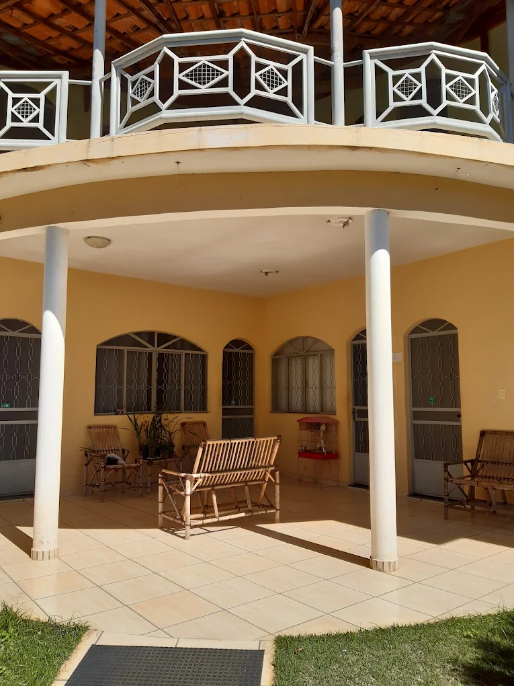
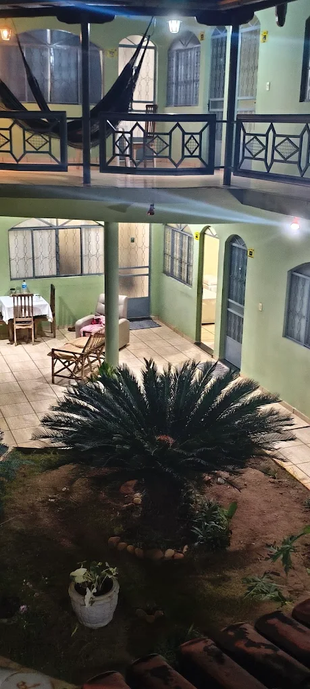

Uma pousada de bairro, perto do rio
A Hotel Pousada Aquários fica em Buritizeiro, no norte de Minas Gerais — cidade separada de Pirapora pelo Rio São Francisco.
Como a pousada começou
História em confirmação
Quando a pousada abriu, quem cuida do dia a dia e o que mudou ao longo dos anos são informações que só o proprietário pode contar. O espaço está reservado.
As áreas comuns
Fotografias atuais, feitas pela própria pousada. Serão substituídas por imagens novas antes da publicação.






O que a pousada informa oferecer
Lista publicada pela própria pousada em material de divulgação. Será confirmada antes da publicação do site.
Café da manhã
Servido na área de convivência. O horário será confirmado com a pousada.
Garagem coberta
Estacionamento no próprio local, conforme o material de divulgação da pousada.
Áreas comuns
Jardim, varanda e área coberta com mesas, como aparecem nas fotos acima.
O Velho Chico ao lado
Buritizeiro e Pirapora ficam em margens opostas do São Francisco, ligadas pela ponte sobre o rio.
A distância exata entre a pousada e o rio, e os pontos de interesse perto dela, entram na página de localização assim que forem confirmados.
Quer conhecer a pousada?
Fale direto com a pousada para consultar disponibilidade e valores.